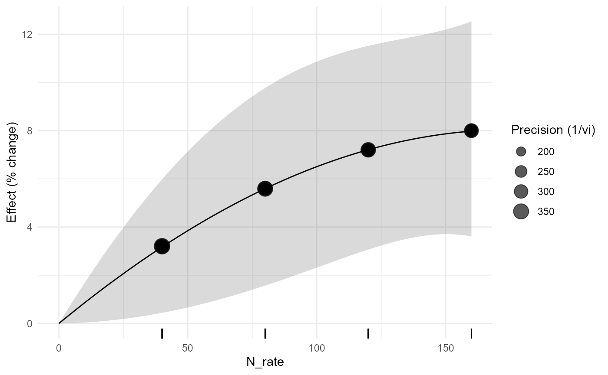
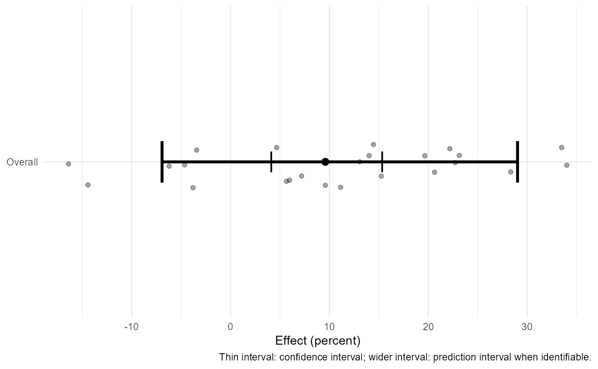

agriPairMetaFlow 0.3.0: From Agronomic Question to Dependence-aware Meta-regression and Dose Response
Source:vignettes/v00-foundations-to-advanced-tutorial.Rmd
v00-foundations-to-advanced-tutorial.Rmd1. Why the package starts with design
A treatment-control meta-analysis is not defined only by two columns of means. The experimental unit, reused controls, true matching, response scale, and uncertainty determine what can be synthesized. Version 0.3.0 connects auditing, effect-size construction, dependence-aware fitting, robust inference, prespecified meta-regression, quantitative moderator curves, and correlated dose-response synthesis.
2. Inspect and audit
apm_validate(maize_n_shared, "summary", strict=FALSE)
#> <apm_validation> PASS
apm_audit(maize_n_shared, "full")
#> <apm_audit>
#> severity code
#> warning shared_control
#> message
#> 8 study/experiment control arm(s) are reused across multiple treatment contrasts.
#> rows
#> <NA>
#> action
#> Model sampling dependence with apm_vcov() or use one independent contrast per experiment.
apm_plan(maize_n_shared, study=study_id, experiment=experiment_id, treatment=treatment, control=control, response=mean_t, dose=N_rate)
#> <apm_plan>
#> design: independent
#> shared controls: 8
#> - Shared controls detected: model their sampling covariance with apm_vcov().The audit warns that the same control is reused. This is
scientifically consequential. From version 0.2.0 onward the covariance
can be represented explicitly with apm_vcov() and fitted
with multilevel or meta-regression models rather than treating these
contrasts as independent.
3. Effect sizes
e_rr <- apm_effect_size(covercrop_variability,"lnRR",m_t=mean_t,sd_t=sd_t,n_t=n_t,m_c=mean_c,sd_c=sd_c,n_c=n_c)
e_vr <- apm_effect_size(covercrop_variability,"VR",m_t=mean_t,sd_t=sd_t,n_t=n_t,m_c=mean_c,sd_c=sd_c,n_c=n_c)
e_cvr <- apm_effect_size(covercrop_variability,"CVR",m_t=mean_t,sd_t=sd_t,n_t=n_t,m_c=mean_c,sd_c=sd_c,n_c=n_c)lnRR addresses mean response; VR and CVR ask different questions about variability. A treatment may increase the expected yield yet decrease relative variability, which can be agronomically valuable.
4. Core model, heterogeneity, prediction, and thresholds
fit <- apm_fit(agri_effects_benchmark)
apm_heterogeneity(fit, ci=FALSE)
#> <apm_heterogeneity>
#> k Q Q_df Q_p tau2 tau I2 H2
#> 24 37.47688 23 0.02896215 0.006258635 0.07911153 38.53446 1.626928
apm_prediction(fit, transform="percent")
#> <apm_prediction> transform=percent
#> pred se ci_lower ci_upper pi_lower pi_upper
#> 9.581184 0.02609049 4.118456 15.33052 -6.925962 29.01595
apm_threshold(fit, 5, scale="percent")
#> <apm_threshold>
#> threshold: 5 [ percent ]
#> CI: crosses threshold
#> PI: crosses threshold
#> probability: 0.696A confidence interval describes uncertainty about the average effect. A prediction interval addresses the range expected for a future context under the fitted random-effects model. They answer different questions and should not be interchanged.
5. Subgroups and visualization
apm_subgroup(agri_effects_benchmark, crop, test="z")
#> <apm_subgroup>
#> subgroup k estimate se ci_lower ci_upper pi_lower pi_upper
#> maize 8 0.08643770 0.05243914 -0.01634113 0.1892165 -0.1505993 0.3234746
#> soybean 8 0.08415367 0.03530365 0.01495980 0.1533475 0.0149598 0.1533475
#> wheat 8 0.10958704 0.05273047 0.00623722 0.2129369 -0.1296627 0.3488368
#> Omnibus subgroup test:
#> QM df QMp
#> 0.1950858 2 0.9070634
apm_forest(fit, transform="percent", columns=c("crop","dose"))
#> `height` was translated to `width`.
apm_funnel(fit, contour=TRUE)
apm_table(fit,"model",transform="percent")
#> term estimate se ci_lower ci_upper
#> intrcpt intrcpt 9.581 0.026 4.118 15.331A funnel plot is a diagnostic display, not a publication-bias verdict. Subgroup-specific significance is likewise not evidence that subgroup effects differ; the between-subgroup test is the relevant comparison.
6. Dependence-aware meta-regression
mz_es <- apm_effect_size(maize_n_shared,"lnRR",m_t=mean_t,sd_t=sd_t,n_t=n_t,m_c=mean_c,sd_c=sd_c,n_c=n_c)
mz_V <- apm_vcov(mz_es,cluster=experiment_id,shared_control=TRUE)
mz_reg <- apm_metareg(mz_es,~N_rate+soil_texture,V=mz_V,random=~1|study_id/effect_id)
apm_marginal_effects(mz_reg,variables="soil_texture",transform="percent")
#> <apm_marginal> weights=equal | transform=percent
#> soil_texture pred se ci_lower ci_upper pi_lower pi_upper
#> clay 9.407854 0.03134488 2.483151 16.80045 NA NA
#> loam 9.247484 0.02928991 2.772532 16.13038 NA NA
#> sandy 9.836766 0.03578598 1.936194 18.34967 NA NAThe moderator analysis retains the sampling covariance induced by the common zero-N arm.
7. Quantitative moderator curves
irr_es <- apm_effect_size(irrigation_climate,"lnRR",m_t=mean_t,sd_t=sd_t,n_t=n_t,m_c=mean_c,sd_c=sd_c,n_c=n_c)
irr_curve <- apm_metareg_curve(irr_es,rainfall,"quadratic")
apm_curve_features(irr_curve,c("slope","turning_point"))
#> <apm_curve_features>
#> Turning points:
#> [1] location lower upper inside_support
#> [5] interval_method
#> <0 rows> (or 0-length row.names)
#> Slope grid: 200 locations
#> Moderator-curve features are descriptive across-study associations and are not automatically causal dose recommendations.
apm_predict_context(irr_curve,data.frame(rainfall=c(700,1000)),transform="percent")
#> <apm_prediction> transform=percent
#> rainfall support pred se ci_lower ci_upper pi_lower
#> 700 interpolation 11.691871 0.02021389 7.028627 16.55829 7.028627
#> 1000 interpolation 8.726033 0.02023404 4.182187 13.46806 4.182187
#> pi_upper threshold_relation probability_above_threshold probability_basis
#> 16.55829 <NA> NA not requested
#> 13.46806 <NA> NA not requestedThese are across-study moderator relationships. A curve feature is not automatically a causal agronomic optimum.
8. Correlated dose-response
dose_fit <- apm_dose_response(fertilizer_dose_response,effect=lnRR,dose=N_rate,study=study_id,form="quadratic",method="fixed")
apm_dose_plot(dose_fit,transform="percent")
Dose-response is kept conceptually separate because several doses within one experiment share the same reference group.
Version 0.5.0: diagnosing, stress-testing, and communicating the synthesis
A fitted model is not the end of the workflow. Before communicating an agronomic synthesis, ask whether the conclusion is unusually dependent on one independent study, whether subsets reveal unresolved heterogeneity structure, whether small-study patterns change under explicit selection assumptions, and whether the final figure distinguishes mean-effect uncertainty from prediction for a new setting.
fit05 <- apm_fit(agri_effects_benchmark)
loo05 <- apm_leave_one_out(fit05, unit = "study")
inf05 <- apm_influence(fit05, unit = "study", plot = FALSE)
bias05 <- apm_bias(fit05, methods = c("egger", "rank", "trimfill"))
apm_orchard(fit05, transform = "percent")
#> `height` was translated to `width`.
#> `height` was translated to `width`.
apm_explain(fit05, audience = "scientific", transform = "percent")
#> [1] "The pooled meta-analytic estimate is 9.6% with an approximate 95% interval from 4.1% to 15.3%. This interval describes uncertainty in the estimated mean effect, not the range expected in every future agronomic setting."
#> [2] "The 95% prediction interval for a new true study effect extends from -6.9% to 29.0%. A wide interval indicates that response can differ materially among environments, years, crops, soils, or management contexts."
#> [3] "Interpretation assumes the effect-size calculation, experimental-unit definition, sampling variances, dependence structure, and fitted heterogeneity model are appropriate for the included evidence."
#> [4] "Statistical significance alone is not treated as agronomic importance. Use prediction intervals, practical thresholds, dependence diagnostics, and sensitivity analyses where relevant."
#> attr(,"tags")
#> attr(,"tags")$object_class
#> [1] "apm_model"
#>
#> attr(,"tags")$audience
#> [1] "scientific"
#>
#> attr(,"tags")$estimate
#> [1] 0.0914955
#>
#> attr(,"tags")$ci
#> [1] 0.04035907 0.14263192
#>
#> attr(,"tags")$prediction_interval
#> [1] -0.0717749 0.2547659
#>
#> attr(,"tags")$measure
#> [1] "lnRR"
#>
#> attr(,"class")
#> [1] "apm_explanation" "character"These functions answer different questions. Leave-one-study-out sensitivity asks whether the pooled result or heterogeneity depends strongly on one independent evidence unit. Influence metrics locate unusual leverage or impact. GOSH examines many subsets and is useful for discovering unresolved structures. Funnel-asymmetry and selection analyses probe possible small-study or publication-selection mechanisms under specific assumptions. None of these procedures provides an automatic study-exclusion rule.
When many moderators are available,
apm_moderator_screen() can be used as an exploratory
MetaForest stage. It should be followed by scientifically specified
meta-regression rather than interpreted as a confirmatory
variable-selection procedure. The package keeps this distinction in the
returned class and caution text.
For reporting, apm_report() summarizes an already fitted
object and records provenance; it does not refit the model.
apm_export() preserves the complete object in RDS or
creates numeric tables and publication-quality figures. Large GOSH,
MetaForest tuning, wild bootstrap, and Bayesian computation should be
precomputed in the developer workflow when they would make routine
vignette rendering expensive.